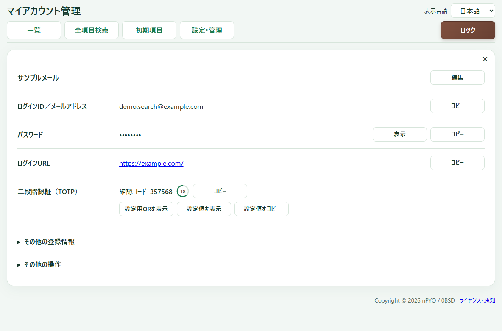
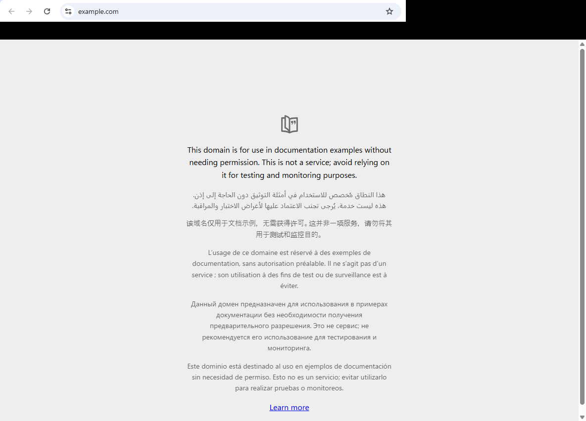

11URLをブラウザーで開く
登録したログインURLを、詳細画面からブラウザーで開きます。
手順一覧を開く（2手順）
1登録したURLを押す
アカウントの詳細を開き、［ログインURL］のリンクを押します。

2ブラウザーで開いた先を確認する
アドレス欄を確かめてから利用します。この例は説明用のexample.comで、ログイン成功を示す画面ではありません。

登録したログインURLを、詳細画面からブラウザーで開きます。
アカウントの詳細を開き、［ログインURL］のリンクを押します。

アドレス欄を確かめてから利用します。この例は説明用のexample.comで、ログイン成功を示す画面ではありません。
